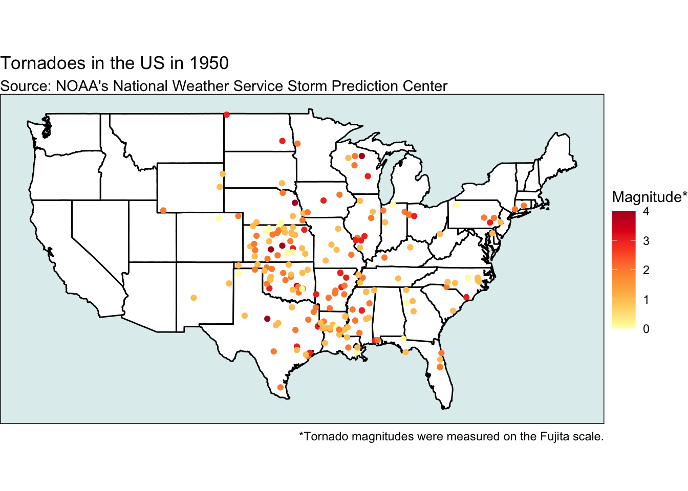
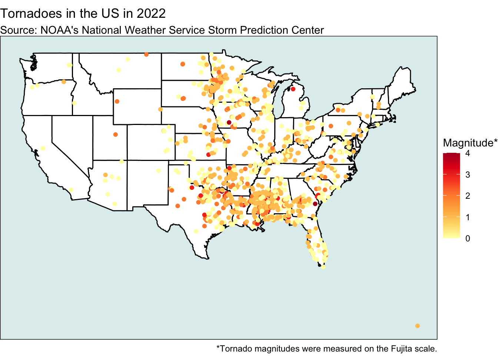
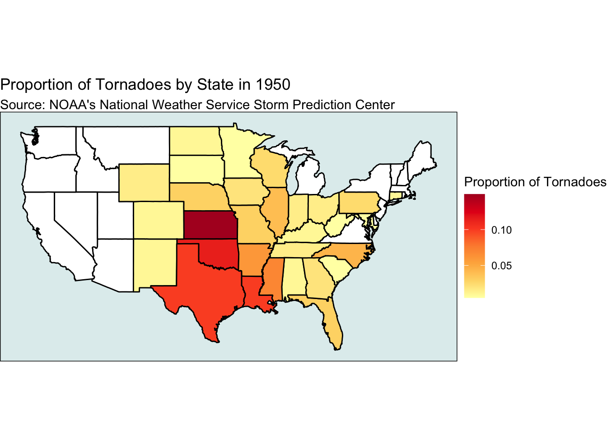
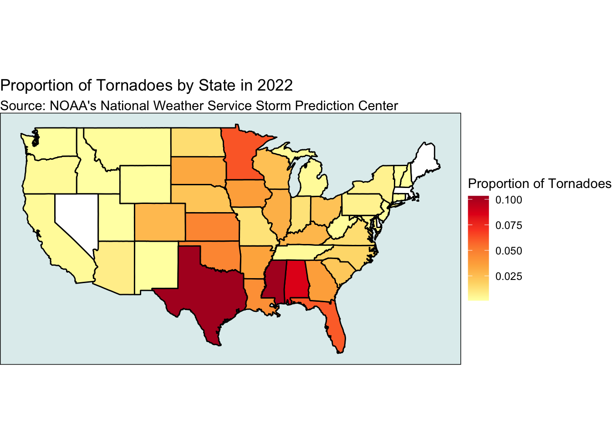

Code
# If you need to read in csv data do it here.
tornadoes_data <- read.csv("tornados.csv")How Have Tornado ‘Hotspots’ Shifted From 1950 to 2022?
Anonymous Author 1
Smith College
Ayano Tamura
Smith College
Anonymous Author 2
Smith College
May 5, 2025
# Group member 1 work here!
usa <- map_data("state")
plot_tornadoes_year <- function(year_input) {
# Filter tornadoes for the given year
tornadoes_year <- tornadoes_data |>
filter(yr == year_input, !is.na(mag))
# Make the map
ggplot() +
geom_polygon(data = usa, aes(x = long, y = lat, group = group),
fill = "white", color = "black") +
geom_point(data = tornadoes_year,
aes(x = slon, y = slat, color = mag)) +
scale_color_distiller(palette = "YlOrRd", direction = 1, name = "Magnitude*") +
coord_fixed(1.3) +
labs(title = paste("Tornadoes in the US in", year_input),
subtitle = "Source: NOAA's National Weather Service Storm Prediction Center",
caption = "*Tornado magnitudes were measured on the Fujita scale.") +
theme_void() +
theme(panel.background = element_rect(fill = "azure2",
colour = "black",
linewidth = 0.5))
}
plot_tornadoes_year(1950)

[[1]]
[[2]]# Group member 3 work here!--choropleth map
plot_choropleth_tornadoes <- function(year_input) {
tornadoes_year <- tornadoes_data |>
filter(yr == year_input) |>
mutate(state_name = tolower(state.name[match(st, state.abb)]))
#calculating proportion by state
choropleth_data_new <- tornadoes_year |>
group_by(state_name) |>
summarise(count = n(), .groups = "drop") |>
mutate(proportion = count / nrow(tornadoes_year))
#joining with USA map data
map_data_joined <- left_join(usa, choropleth_data_new, by = c("region" = "state_name"))
#plotting
ggplot(map_data_joined, aes(x = long, y = lat, group = group, fill = proportion)) +
geom_polygon(color = "black") +
scale_fill_distiller(palette = "YlOrRd", direction = 1, name = "Proportion of Tornadoes", na.value = "white") +
coord_fixed(1.3) +
labs(title = paste("Proportion of Tornadoes by State in", year_input),
subtitle = "Source: NOAA's National Weather Service Storm Prediction Center") +
theme_void() +
theme(panel.background = element_rect(fill = "azure2",
colour = "black",
linewidth = 0.5))
}
plot_choropleth_tornadoes(1950)

We analyzed the National Oceanic and Atmospheric Administration (NOAA) tornado dataset from Kaggle, which contains detailed information about tornadoes in the United States from 1950 to 2022. The dataset includes variables such as each tornado’s date, location in longitude and latitude, and magnitude. Between 1950 and 2022, global warming and overall atmospheric changes have affected tornado behavior. Thus, the question we sought to answer was “How have tornado ‘hotspots’ shifted from 1950 to 2022?”
To explore our question, we created visual maps of tornado locations for both 1950 and 2022, and compared them. We first created a map using a function to generate tornado plots for a given year, and used it to create maps for both years. We recreated these maps using a purrr::map iteration as well. Comparing the two maps, we observed an increase in both the magnitude of the tornadoes, and an overall increase in the number of tornadoes between 1950 and 2022. For our second map, we created a choropleth map function to visualize the proportion of tornadoes in each US state for both years. By comparing the two choropleth maps between 1950 and 2022, we found that most states showed an increase in tornado activity over time, as indicated by a higher proportion of tornadoes across the country in 2022 compared to 1950.
One major limitation of our analysis is that we only compared data from two individual years—1950 and 2022—rather than examining trends across the full time series. Analyzing just two snapshots may not capture the broader patterns or variability in tornado activity over time. For instance, we observed that Oklahoma and Kansas experienced fewer tornadoes in 2022 compared to 1950, which is unusual given the general trend of increasing tornado activity with time. This anomaly could reflect that 2022 was simply an atypical year for those regions, or it could signal that climate change is leading to more unpredictable or shifting tornado patterns. Additionally, we filtered out tornadoes that did not have recorded magnitude data, which could have excluded weaker tornadoes and slightly skewed our visualizations toward stronger events.
An ethical concern about the dataset is that it may have historical biases in how tornadoes were recorded over time. In earlier decades in the dataset, especially the 1950s and 1960s, tornado detection relied heavily on human observations and reports, meaning that many weaker or rural tornadoes likely went undocumented. In contrast, modern technology has dramatically improved tornado detection and reporting accuracy. As a result, the apparent increase or shifts in tornado patterns over time might partially reflect improvements in data collection rather than true changes in tornado behavior. This introduces a historical reporting bias that needs to be considered when interpreting trends, to avoid drawing misleading conclusions about the effects of climate change or regional risk.
---
title: "SDS 192 Project 3"
subtitle: "How Have Tornado ‘Hotspots’ Shifted From 1950 to 2022?"
author:
- name: Anonymous Author 1
affiliation: Smith College
- name: Ayano Tamura
affiliation: Smith College
- name: Anonymous Author 2
affiliation: Smith College
date: "`r format(Sys.Date(), '%B %e, %Y')`"
format:
html:
fig_width: 7
fig_height: 6
fig_caption: true
df_print: paged
code-fold: true
code-tools: true
editor:
mode: source
---
```{r setup}
#| eval: true
#| echo: false
#| message: false
# Include all libraries you may need for your project here.
library(tidyverse)
library(maps)
library(ggplot2)
library(sf)
```
# Visualization Maps
```{r helper-chunk}
# If you need to read in csv data do it here.
tornadoes_data <- read.csv("tornados.csv")
```
```{r analysis-1}
# Group member 1 work here!
usa <- map_data("state")
plot_tornadoes_year <- function(year_input) {
# Filter tornadoes for the given year
tornadoes_year <- tornadoes_data |>
filter(yr == year_input, !is.na(mag))
# Make the map
ggplot() +
geom_polygon(data = usa, aes(x = long, y = lat, group = group),
fill = "white", color = "black") +
geom_point(data = tornadoes_year,
aes(x = slon, y = slat, color = mag)) +
scale_color_distiller(palette = "YlOrRd", direction = 1, name = "Magnitude*") +
coord_fixed(1.3) +
labs(title = paste("Tornadoes in the US in", year_input),
subtitle = "Source: NOAA's National Weather Service Storm Prediction Center",
caption = "*Tornado magnitudes were measured on the Fujita scale.") +
theme_void() +
theme(panel.background = element_rect(fill = "azure2",
colour = "black",
linewidth = 0.5))
}
plot_tornadoes_year(1950)
plot_tornadoes_year(2022)
```
```{r analysis-2}
# Group member 2 work here!
#making an iteration with purrr::map
library(purrr)
# Choosing the two years I want to map
years <- c(1950, 2022)
# Generate plots for each year and store them in a list
plot_iterations <- purrr::map(years, ~plot_tornadoes_year(.x))
plot_iterations[]
```
```{r analysis-3}
# Group member 3 work here!--choropleth map
plot_choropleth_tornadoes <- function(year_input) {
tornadoes_year <- tornadoes_data |>
filter(yr == year_input) |>
mutate(state_name = tolower(state.name[match(st, state.abb)]))
#calculating proportion by state
choropleth_data_new <- tornadoes_year |>
group_by(state_name) |>
summarise(count = n(), .groups = "drop") |>
mutate(proportion = count / nrow(tornadoes_year))
#joining with USA map data
map_data_joined <- left_join(usa, choropleth_data_new, by = c("region" = "state_name"))
#plotting
ggplot(map_data_joined, aes(x = long, y = lat, group = group, fill = proportion)) +
geom_polygon(color = "black") +
scale_fill_distiller(palette = "YlOrRd", direction = 1, name = "Proportion of Tornadoes", na.value = "white") +
coord_fixed(1.3) +
labs(title = paste("Proportion of Tornadoes by State in", year_input),
subtitle = "Source: NOAA's National Weather Service Storm Prediction Center") +
theme_void() +
theme(panel.background = element_rect(fill = "azure2",
colour = "black",
linewidth = 0.5))
}
plot_choropleth_tornadoes(1950)
plot_choropleth_tornadoes(2022)
```
# Blog Post
We analyzed the National Oceanic and Atmospheric Administration (NOAA) tornado dataset from Kaggle, which contains detailed information about tornadoes in the United States from 1950 to 2022. The dataset includes variables such as each tornado’s date, location in longitude and latitude, and magnitude. Between 1950 and 2022, global warming and overall atmospheric changes have affected tornado behavior. Thus, the question we sought to answer was “How have tornado ‘hotspots’ shifted from 1950 to 2022?”
To explore our question, we created visual maps of tornado locations for both 1950 and 2022, and compared them. We first created a map using a function to generate tornado plots for a given year, and used it to create maps for both years. We recreated these maps using a purrr::map iteration as well. Comparing the two maps, we observed an increase in both the magnitude of the tornadoes, and an overall increase in the number of tornadoes between 1950 and 2022. For our second map, we created a choropleth map function to visualize the proportion of tornadoes in each US state for both years. By comparing the two choropleth maps between 1950 and 2022, we found that most states showed an increase in tornado activity over time, as indicated by a higher proportion of tornadoes across the country in 2022 compared to 1950.
One major limitation of our analysis is that we only compared data from two individual years—1950 and 2022—rather than examining trends across the full time series. Analyzing just two snapshots may not capture the broader patterns or variability in tornado activity over time. For instance, we observed that Oklahoma and Kansas experienced fewer tornadoes in 2022 compared to 1950, which is unusual given the general trend of increasing tornado activity with time. This anomaly could reflect that 2022 was simply an atypical year for those regions, or it could signal that climate change is leading to more unpredictable or shifting tornado patterns. Additionally, we filtered out tornadoes that did not have recorded magnitude data, which could have excluded weaker tornadoes and slightly skewed our visualizations toward stronger events.
An ethical concern about the dataset is that it may have historical biases in how tornadoes were recorded over time. In earlier decades in the dataset, especially the 1950s and 1960s, tornado detection relied heavily on human observations and reports, meaning that many weaker or rural tornadoes likely went undocumented. In contrast, modern technology has dramatically improved tornado detection and reporting accuracy. As a result, the apparent increase or shifts in tornado patterns over time might partially reflect improvements in data collection rather than true changes in tornado behavior. This introduces a historical reporting bias that needs to be considered when interpreting trends, to avoid drawing misleading conclusions about the effects of climate change or regional risk.